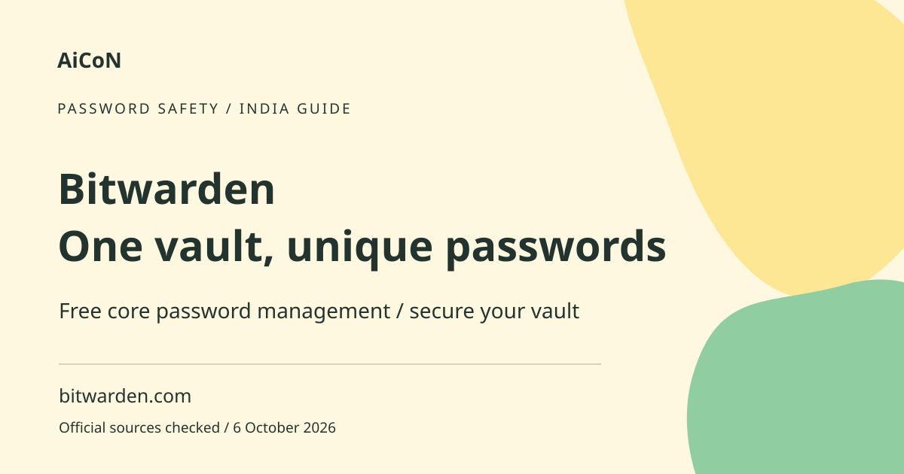

Bitwarden: free password storage and safe setup
Bitwarden stores logins in an encrypted password vault. Its free individual plan includes unlimited passwords and devices. Your master password and account security matter more than simply installing the app.

What is a password manager?
A password manager keeps logins in a vault so you can use a different strong password for each service. A vault is protected storage for your saved items. The master password is the main secret used to access your Bitwarden account. Unique passwords reduce the damage when one site has a breach, because the same password is not reused elsewhere.
What is free?
Bitwarden's official plan guide lists unlimited logins, notes, cards and identities, access on any device and a password generator in the free individual plan. Paid Premium adds features. Sharing plans and integrated authentication features have their own limits; do not assume every recovery or family feature is free. The free plan is enough to start storing unique passwords across supported devices.
How to get started, step by step
- Open bitwarden.com and follow its official account and download links. Confirm the publisher before installing an app or extension.
- Create your account using an email you control. Choose a strong, memorable master password you have never used elsewhere. Bitwarden's guide requires at least 12 characters for newer master passwords; a longer unique passphrase can be easier to remember.
- Keep a secure offline record of essential recovery information where appropriate. Do not put your master password in a public note, chat, email or the same vault as your only recovery copy.
- Enable an available two-step login method and safely store the recovery information supplied by that process. Two-step login adds another check after the password. Test access before migrating everything.
- Install the official browser extension or mobile app as needed. Set an appropriate vault timeout and lock behaviour.
- Add a few logins manually or use the official import instructions. If an export file contains passwords, protect it and remove the temporary copy after confirming the import.
- Use the generator when changing a site password. Save the correct website address and verify that you can log in before discarding old records.
- Migrate gradually, starting with important accounts. Keep a recovery plan and review saved entries for duplicates or outdated passwords.
Do not forget the master password
Bitwarden says its employees and systems do not know, retrieve or reset your master password. Biometrics or a device PIN can unlock a locked local app in supported setups, but they are not a universal recovery replacement. Recovery options depend on your account and plan. Do not assume support can open the vault if you lose every access method.
Autofill and phishing
Autofill can reduce typing but should not replace checking a website. Confirm the domain before entering credentials. A password manager is not protection against giving away an OTP, approving a malicious payment or installing an unsafe extension. Keep the phone, browser and app updated. Do not share a whole vault or export to help someone sign in to one account.
Paid pricing and India availability
The current public pricing displays Premium billed annually in USD. A displayed monthly equivalent is not a month-to-month purchase. We do not convert it into a fixed India price; check the actual rupee total, tax and exchange costs before upgrading. The website and official apps provide a route for Indian users, subject to current store and service availability. No paid upgrade is necessary for the documented free core password storage.
Privacy, backups and shared access
A vault can contain highly sensitive information. Review backup or export settings and prefer an appropriately protected backup. An unencrypted CSV export is readable by anyone who gets it. For family or team sharing, use the intended organisation features and permissions, not a shared master password. Decide who needs each item and revoke access when it is no longer needed.
Frequently asked questions
Is the free plan limited to one device?
No. Official free-plan guidance includes access on any device.
Can Bitwarden reset my forgotten master password?
It says its employees and systems cannot retrieve or reset it. Plan recovery carefully.
Does installing it fix reused passwords?
No. You must change reused site passwords to unique ones.
Should I share my master password with family?
No. Use appropriate sharing features for selected items instead.
Official sources
- Official Bitwarden pricing
- Official personal product
- Official plan comparison
- Master-password guidance
- Getting started for individuals
Checked 6 October 2026. Expanded from an AiCoN short post delivered 6 October 2026. Portal screens and rules can change.